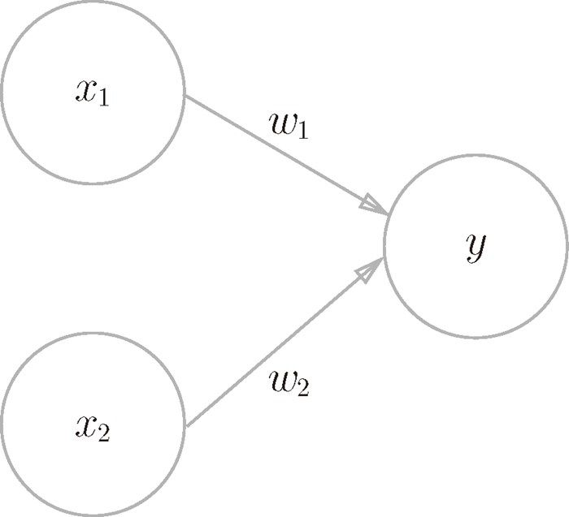
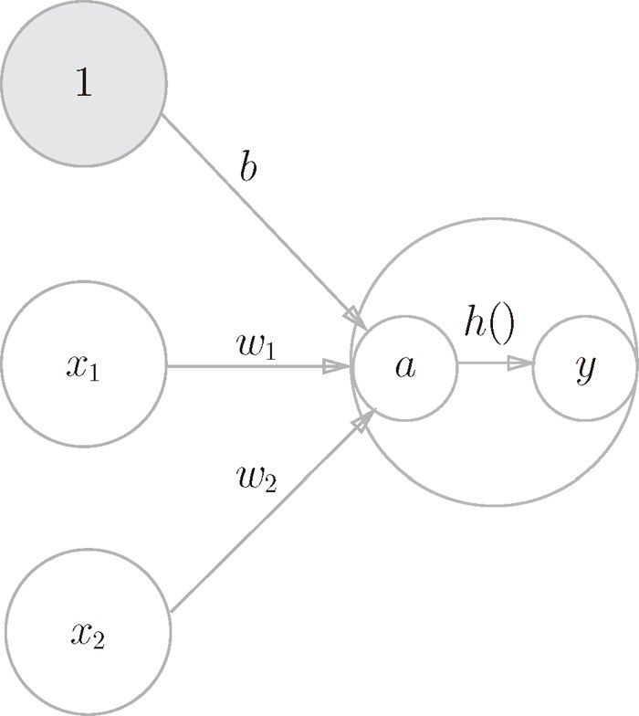

图 3-1 中的网络一共由 3 层神经元构成，但实质上只有 2 层神经元有权重，因此将其称为“2 层网络”。请注意，有的书也会根据构成网络的层数，把图 3-1 的网络称为“3 层网络”。本书将根据实质上拥有权重的层数（输入层、隐藏层、输出层的总数减去 1 后的数量）来表示网络的名称。
图 3-1 中的网络一共由 3 层神经元构成，但实质上只有 2 层神经元有权重，因此将其称为“2 层网络”。请注意，有的书也会根据构成网络的层数，把图 3-1 的网络称为“3 层网络”。本书将根据实质上拥有权重的层数（输入层、隐藏层、输出层的总数减去 1 后的数量）来表示网络的名称。
神经网络和上一章介绍的感知机有很多共同点。这里，我们主要以两者的差异为中心，来介绍神经网络的结构。
用图来表示神经网络的话，如图 3-1 所示。我们把最左边的一列称为输入层，最右边的一列称为输出层，中间的一列称为中间层。中间层有时也称为隐藏层。“隐藏”一词的意思是，隐藏层的神经元（和输入层、输出层不同）肉眼看不见。另外，本书中把输入层到输出层依次称为第 0 层、第 1 层、第 2 层（层号之所以从 0 开始，是为了方便后面基于 Python 进行实现）。图 3-1 中，第 0 层对应输入层，第 1 层对应中间层，第 2 层对应输出层。
图 3-1 神经网络的例子
只看图 3-1 的话，神经网络的形状类似上一章的感知机。实际上，就神经元的连接方式而言，与上一章的感知机并没有任何差异。那么，神经网络中信号是如何传递的呢？
在观察神经网络中信号的传递方法之前，我们先复习一下感知机。现在来思考一下图 3-2 中的网络结构。

图 3-2 复习感知机
图 3-2 中的感知机接收 和  两个输入信号，输出 y。如果用数学式来表示图 3-2 中的感知机，则如式（3.1）所示。
两个输入信号，输出 y。如果用数学式来表示图 3-2 中的感知机，则如式（3.1）所示。
b 是被称为偏置的参数，用于控制神经元被激活的容易程度；而 和 是表示各个信号的权重的参数，用于控制各个信号的重要性。
顺便提一下，在图 3-2 的网络中，偏置 b 并没有被画出来。如果要明确地表示出 b，可以像图 3-3 那样做。图 3-3 中添加了权重为 b 的输入信号 1。这个感知机将 、、1 三个信号作为神经元的输入，将其和各自的权重相乘后，传送至下一个神经元。在下一个神经元中，计算这些加权信号的总和。如果这个总和超过 0，则输出 1，否则输出 0。另外，由于偏置的输入信号一直是 1，所以为了区别于其他神经元，我们在图中把这个神经元整个涂成灰色。
现在将式（3.1）改写成更加简洁的形式。为了简化式（3.1），我们用一个函数来表示这种分情况的动作（超过 0 则输出 1，否则输出 0）。引入新函数 h(x)，将式（3.1）改写成下面的式（3.2）和式（3.3）。
图 3-3 明确表示出偏置
式（3.2）中，输入信号的总和会被函数 h(x) 转换，转换后的值就是输出 y。然后，式（3.3）所表示的函数 h(x)，在输入超过 0 时返回 1，否则返回 0。因此，式（3.1）和式（3.2）、式（3.3）做的是相同的事情。
刚才登场的 h（x）函数会将输入信号的总和转换为输出信号，这种函数一般称为激活函数（activation function）。如“激活”一词所示，激活函数的作用在于决定如何来激活输入信号的总和。
现在来进一步改写式（3.2）。式（3.2）分两个阶段进行处理，先计算输入信号的加权总和，然后用激活函数转换这一总和。因此，如果将式（3.2）写得详细一点，则可以分成下面两个式子。
首先，式（3.4）计算加权输入信号和偏置的总和，记为 a。然后，式（3.5）用 h() 函数将 a 转换为输出 y。
之前的神经元都是用一个○表示的，如果要在图中明确表示出式（3.4）和式（3.5），则可以像图 3-4 这样做。

图 3-4 明确显示激活函数的计算过程
如图 3-4 所示，表示神经元的○中明确显示了激活函数的计算过程，即信号的加权总和为节点 a，然后节点 a 被激活函数 h() 转换成节点 y。本书中，“神经元”和“节点”两个术语的含义相同。这里，我们称 a 和 y 为“节点”，其实它和之前所说的“神经元”含义相同。
通常如图 3-5 的左图所示，神经元用一个○表示。本书中，在可以明确神经网络的动作的情况下，将在图中明确显示激活函数的计算过程，如图 3-5 的右图所示。
图 3-5 左图是一般的神经元的图，右图是在神经元内部明确显示激活函数的计算过程的图（a 表示输入信号的总和，h() 表示激活函数，y 表示输出）
下面，我们将仔细介绍激活函数。激活函数是连接感知机和神经网络的桥梁。
1阶跃函数是指一旦输入超过阈值，就切换输出的函数。